第11章 广义线性模型压缩方法
之前只是对线性回归使用罚函数。不难理解，这样的罚函数可以用于很多其它回回归函数的优化上，比如逻辑回归，泊松回归等。glmnet包能够通过罚极大似然函数拟合广义线性回归，也就是在似然函数上加上罚函数，和之间在RSS上加罚函数类似。之前的线性回归的情况是广义线性回归的一个特例。和之前一样，罚函数的选择可以是一阶范数和二阶范数的一个组合。glmnet包可以对一系列调优参数值同时计算参数估计。除了线性回归外，该包可以拟合的广义线性模型还有：逻辑回归、多项式回归，泊松回归，cox回归。glmnet包的作者是Jerome Friedman、Trevor Hastie、Rob Tibshirani和Noah Simon，当前的R包由Trevor Hastie维护。该包还有一个matlab版本。
广义线性模型压缩方法可以表达成优化下面方程：
\[\underset{\beta_{0},\mathbf{\beta}}{min}\frac{1}{N}\Sigma_{i=1}^{N}w_{i}l(y_{i},\beta_{0}+\mathbf{\beta^{T}x_{i}})+\lambda[(1-\alpha)\parallel\mathbf{\beta}\parallel_{2}^{2}/2+\alpha\parallel\mathbf{\beta}\parallel_{1}]\]
其中需要对一定范围内的\(\lambda\)值进行调优。其中：
\[l(y_{i},\beta_{0}+\mathbf{\beta^{T}x_{i}})=-log[\mathcal{L}(y_{i},\beta_{0}+\mathbf{\beta^{T}x_{i}})]\]
也就是似然函数\(\mathcal{L}(y_{i},\beta_{0}+\mathbf{\beta^{T}x_{i}})\)取对数后再加负号，最大化似然函数即等价于最小化\(l(y_{i},\beta_{0}+\mathbf{\beta^{T}x_{i}})\)。参数\(\alpha\)控制了弹性网络罚函数，即在岭回归（\(\alpha=0\)）和lasso（\(\alpha=1\)）之间权衡。\(\lambda\)控制了罚函数的总体权重，其值越大，罚函数相对于似然函数的权重越高。
之前我们已经讲过，岭回归的罚函数能够将参数估计向0收缩，但是不能收缩为0。而lasso的罚函数能够将参数严格收缩为0，因而具有变量选择功能。弹性网络的罚函数结合了这两者。这里的\(\alpha\)也是需要估计的参数。glmnet包使用的是循环坐标下降法（cyclical coordinate descent），这是一种非梯度优化算法。算法每次针对一个参数优化目标方程，固定所有其它参数，然后转向另外一个参数，如此循环直到收敛。
11.1 初识glmnet
在介绍具体不同的广义线性模型压缩方法之前，先让大家熟悉一下这个R包的基本使用方式。我会简单的介绍下其中的主要函数，功能，和输出。这样大家对这个包能做什么有个大致的概念。后面的小节会分别介绍不同模型。
默认设置下的模型是高斯线性回归或者最小二乘模型，也就是之前几个小节介绍的模型，只是参数化的方式略有不同，但都是RSS加上一个罚函数。所以我们还是从之前服装消费者数据集中的自变量和应变量开始：
library(glmnet)
dat <- read.csv("/Users/happyrabbit/Documents/GitHub/DataScientistR/Data/SegData.csv")
# 对数据进行一些清理，删除错误的样本观测，消费金额不能为负数
dat <- subset(dat, store_exp > 0 & online_exp > 0)
# 将10个问卷调查变量当作自变量
trainx <- dat[, grep("Q", names(dat))]
# 将实体店消费量和在线消费之和当作应变量
# 得到总消费量=实体店消费+在线消费
trainy <- dat$store_exp + dat$online_expglmfit = glmnet(as.matrix(trainx), trainy)这里函数glmnet()返回的对象glmfit中含有所有之后可能进一步会用到的模型拟合信息。大家并不需要手动的检查glmfit中都有那些信息，然后提取相应的部分，而是可以通过plot()、coef()、predict()这类耳熟能详的函数来得到相应的信息。比如我们可以用如下方式绘制lasso的参数选择路径图：
plot(glmfit, label = T)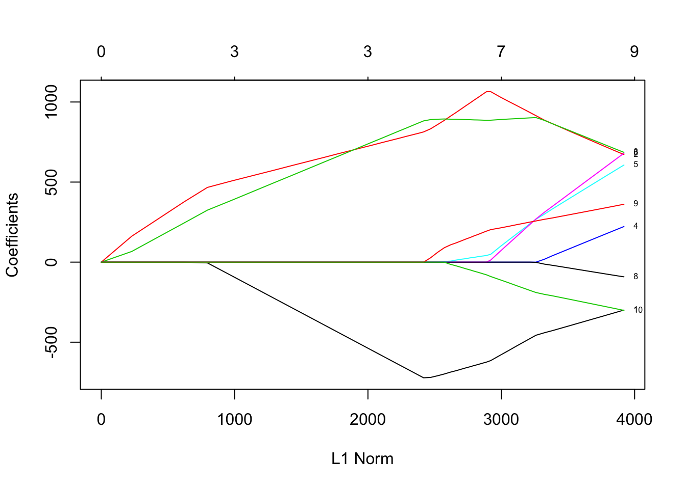
图中每种颜色的线代表对应一个自变量，展示的是随着lasso罚函数（也就是一阶范数，有时也称为\(l_{1}-norm\)）对应调优参数\(\lambda\)变化，各个变量对应的参数估计路径（注：当\(\alpha=1\)时，优化方程里就只有lasso罚函数，这是默认设置）。图中有上下两个x轴标度，下x轴是\(\lambda\)变化对应最优解的一阶范数值（也就是\(\parallel\mathbf{\beta}\parallel_{1}\)），上x轴是相应\(\lambda\)值对应的非0参数估计个数，也就是lasso模型的自由度。我们可以查看路径的具体每一步信息：
print(glmfit)Call: glmnet(x = as.matrix(trainx), y = trainy)
Df %Dev Lambda
[1,] 0 0.0000 3042.000
[2,] 2 0.1038 2771.000
[3,] 2 0.1919 2525.000
[4,] 2 0.2650 2301.000
[5,] 3 0.3264 2096.000
[6,] 3 0.3894 1910.000
[7,] 3 0.4417 1741.000
[8,] 3 0.4852 1586.000
[9,] 3 0.5212 1445.000
[10,] 3 0.5512 1317.000
[11,] 3 0.5760 1200.000
[12,] 3 0.5967 1093.000
[13,] 3 0.6138 996.000
[14,] 3 0.6280 907.500
...这里第一列Df表示非零估计的参数个数，%Dev解释的方差百分比，以及Lambda调优参数\(\lambda\)的取值。虽然在默认设置下，glmnet会尝试100个不同的\(\lambda\)取值，但如果随着\(\lambda\)的减小，%Dev百分比只发生微小变化的时候，算法也会提前停止，上面的例子算法就只计算了68个不同的调优参数取值。我们也可以通过指定一个\(\lambda\)的取值来得到对应的参数估计，其中s=用来指定调优参数值：
coef(glmfit, s = 1200)## 11 x 1 sparse Matrix of class "dgCMatrix"
## 1
## (Intercept) 2255.2221
## Q1 -390.9214
## Q2 653.6437
## Q3 624.4068
## Q4 .
## Q5 .
## Q6 .
## Q7 .
## Q8 .
## Q9 .
## Q10 .在\(\lambda=1200\)时，只有3个变量（Q1、Q2和Q3）的参数估计非0。你也可以用新数据对一个或多个\(\lambda\)值进行预测。我们随机抽取3个观测作为新数据，然后用predict()函数得到针对多个\(\lambda\)值的预测：
newdat = matrix(sample(1:9, 30, replace = T), nrow = 3)
predict(glmfit, newdat, s = c(1741, 2000))## 1 2
## [1,] 3337.144 3394.986
## [2,] 6559.382 6186.969
## [3,] 6831.266 6765.357结果中每列分别对应一个\(\lambda\)取值的预测。这里需要通过交互校验进行参数（\(\lambda\)）调优。glmnet包中的cv.glmnet()可以实现这一目标。
cvfit = cv.glmnet(as.matrix(trainx), trainy)cv.glmnet()会返回一个列表，其中包括交互校验过程的结果，我们将该结果存在cvfit这个对象里。 我们可以对交互校验结果可视化：
plot(cvfit)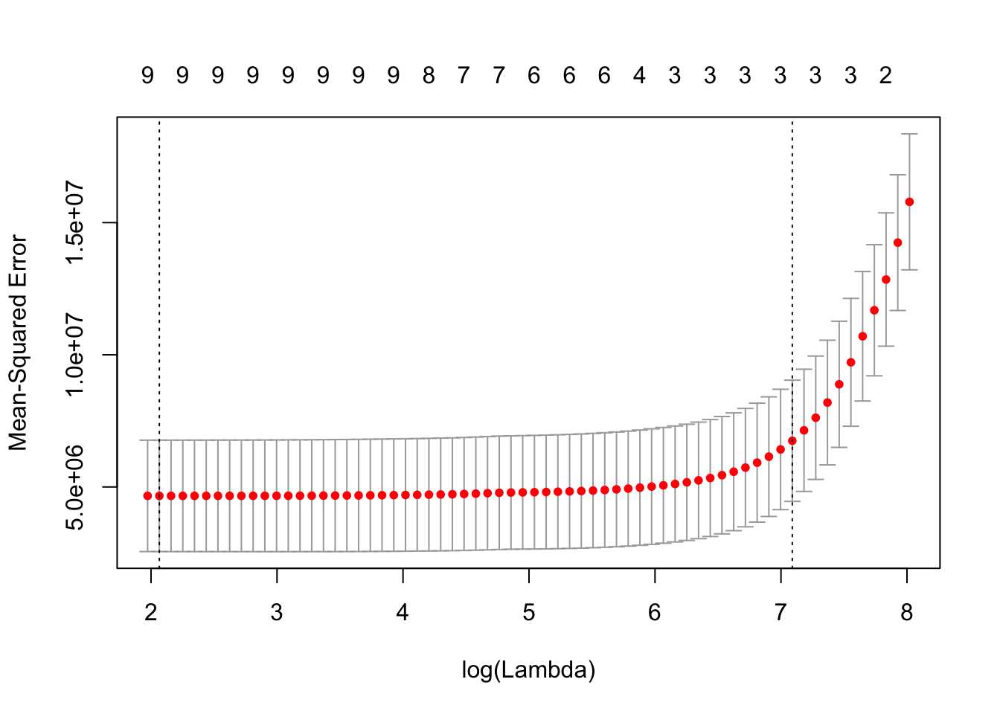
红色的点是不同\(\lambda\)取值对应的交互校验均方误差，灰色的线是相应置信区间。两条虚线表示选中的两个调优参数。左边的那个调优参数值对应的是最小的交互校验均方误差，右边的那个调优参数值是离最小均方误差一个标准差的调优参数值。我们可以通过下面代码查看根据两种不同规则选中的调优参数值：
# 最小均方误差对应的参数值
cvfit$lambda.min## [1] 7.893144# 一个标准差原则下对应的参数值
cvfit$lambda.1se## [1] 1199.688我们也可以按如下方式查看不同调优参数值对应的回归参数（注意这里不是调优参数估计）估计：
# 一个标准差原则下对应的回归参数估计
coef(cvfit, s = "lambda.1se")## 11 x 1 sparse Matrix of class "dgCMatrix"
## 1
## (Intercept) 2255.3136
## Q1 -391.0562
## Q2 653.7079
## Q3 624.5119
## Q4 .
## Q5 .
## Q6 .
## Q7 .
## Q8 .
## Q9 .
## Q10 .11.2 收缩线性回归
普通线性回归是广义线性回归框架下的一种特殊情况。这里将要介绍的是之前章节中线性回归的收缩方法的另外一种实现方式。之后我们会介绍广义框架下更多模型的收缩方法：逻辑回归，多项回归和泊松回归。
线性回归有两种，一种是我们已经介绍过的属于高斯（gaussian）家族的模型，其中应变量是一个向量。另外一种是多元高斯（multivariate gaussian），也就是多元响应变量的情况，这时应变量是一个矩阵，参数也是矩阵。我们着重介绍用glmnet包实现普通高斯收缩回归。
假定自变量观测\(\mathbf{x_{i}}\in \mathbb{R}^{p}\)，应变量\(y_{i} \in \mathbb{R},\ i=1,\dots,n\)。这里的收缩线性回归目标是找到能够优化下面方程的参数估计，这和前一章参数化的方式略有不同，但本质是相同的：
\[\underset{(\beta_{0},\mathbf{\beta})\in \mathbb{R}^{p+1}}{min}\frac{1}{2n}\Sigma_{i=1}^{n}(y_{i}-\beta_{0}-\mathbf{x_{i}^{T} \beta)}^2+\lambda [(1-\alpha)]\Vert\beta\Vert_2^2/2+\alpha\Vert\beta\Vert_1\] 其中\(\lambda>0\)是总体的复杂度参数，\(0\leq\alpha\leq1\)是权衡lasso（\(\alpha=1\)）和ridge（\(\alpha=0\)）罚函数的参数。glmnet提供了定义各种参数设置的选项。下面是一些通常需要用到的参数设置：
alpha：上面优化函数中的\(\alpha\)，默认设置是\(\alpha=1\)，也就是lasso回归，你可以将其设置为0进行岭回归。\(\alpha\in[0,1]\)。weights： 每个观测的权重，默认设置下每个观测的权重都是1，权重总和就是参数个数n。你也可以自定义每个观测的权重，但是glmnet包会自动将你设置的权重标准化，使得权重之和总是n。nlambda：调优参数\(\lambda\)的取值个数，默认设置是100。函数会自行生成一个含有nlambda个\(\lambda\)取值的向量进行调优。这些值的选取基于两个量：lambda.max和lambda.min.ratio。前者是最大的lambda值，在\(\alpha\)不为0的情况下，一阶范数罚\(\Vert\beta\Vert_1\)使得存在一个\(\lambda\)取值时所有的参数估计都收缩为0，也就是模型中只有截距项。这个取值就是lambda.max。当\(\alpha＝0\)的时候，lambda.max将是无穷大，因此在这种情况下，函数会自动选择一个很小的\(\alpha\)值用来计算lambda.max。具体背后的数学原理，可以参考上一章的“知识扩展：Lasso的变量选择功能”小节。lambda.min.ratio是向量中最小的\(\lambda\)取值与最大\(\lambda\)取值的比例。如果lambda.min.ratio＝0，表明调优参数\(\lambda\)的取值向量分布从0到lambda.max。lambda：如果不用设定nlambda的方式，你也可以通过设定lambda这个参数自己定义调优参数值向量。standardize：用来告诉函数是否标准化自变量的逻辑值。默认设置为standardize=TRUE。
作为例子，这里设置alpha=0.2，nlamdba=10。在实际应用中，通常会尝试100-150个不同的\(\lambda\)取值，这里为了避免过多的输出，只设置20个值。
# 这里要用as.matrix(xtrain)将自变量输入转化成矩阵
fit = glmnet(as.matrix(trainx), trainy, alpha = 0.2, nlambda = 20)
# 这里digits=2限制了输出中的小数位数
print(fit, digits = 4)##
## Call: glmnet(x = as.matrix(trainx), y = trainy, alpha = 0.2, nlambda = 20)
##
## Df %Dev Lambda
## [1,] 0 0.0000 15210.000
## [2,] 4 0.2502 9366.000
## [3,] 6 0.4590 5768.000
## [4,] 7 0.5848 3552.000
## [5,] 9 0.6502 2188.000
## [6,] 9 0.6823 1347.000
## [7,] 9 0.6967 829.700
## [8,] 9 0.7033 511.000
## [9,] 9 0.7064 314.700
## [10,] 9 0.7080 193.800
## [11,] 9 0.7088 119.300
## [12,] 9 0.7093 73.500
## [13,] 9 0.7095 45.270
## [14,] 9 0.7096 27.880
## [15,] 9 0.7096 17.170
## [16,] 9 0.7096 10.570
## [17,] 10 0.7096 6.511
## [18,] 10 0.7096 4.010关于输出中各列代表什么，参考之前的解释。大家可能会发现，之前设置了20个调优参数值，这里只输出了18个。其原因在于算法中设置了停止条件。根据默认设置，在下面两种情况下计算会停止：
- 解释的方差百分比（
%Dev）的变化小于\(10^{-5}\)时 - 解释的方差百分比本身大于\(0.999\)
这里停止是因为遇到了第一种情况，\(\lambda\)的取值变化几乎不会对解释的方差百分比造成影响。更多关于算法的控制条件，可以键入help("glmnet.control")。
我们可以用plot()绘制拟合过程的参数估计路径图。图的x坐标轴有3个设置：
norm：参数估计的一阶范数，这是默认设置lambda：\(log(\lambda)\)值dev：解释方差的百分比，即之前结果输出中的%Dev
我们之前展示了默认设置下的参数估计路径图（norm）。现在绘制另外两种情况。设置xvar = "lambda"可以得到对应\(log(\lambda)\)的路径图：
plot(fit, xvar = "lambda", label = T)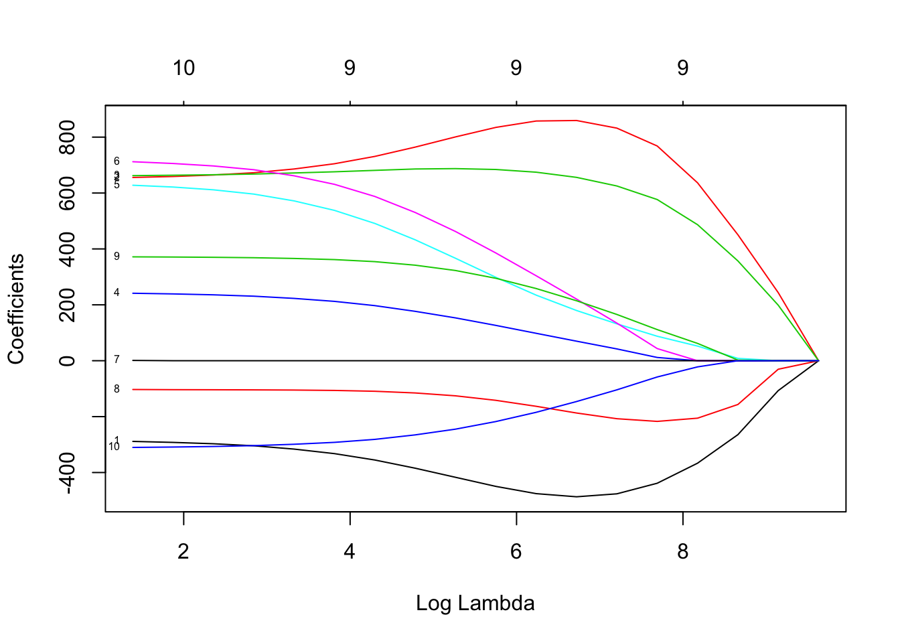
可以看到，随着\(\lambda\)值的增大，参数逐步向0收缩。Q1、Q2、Q3和Q8的参数估计都差不多在最后才收缩为0。说明这几个变量对解释应变量最重要。下面我们看看对于解释方差的百分比的路径图：
plot(fit, xvar = "dev", label = T)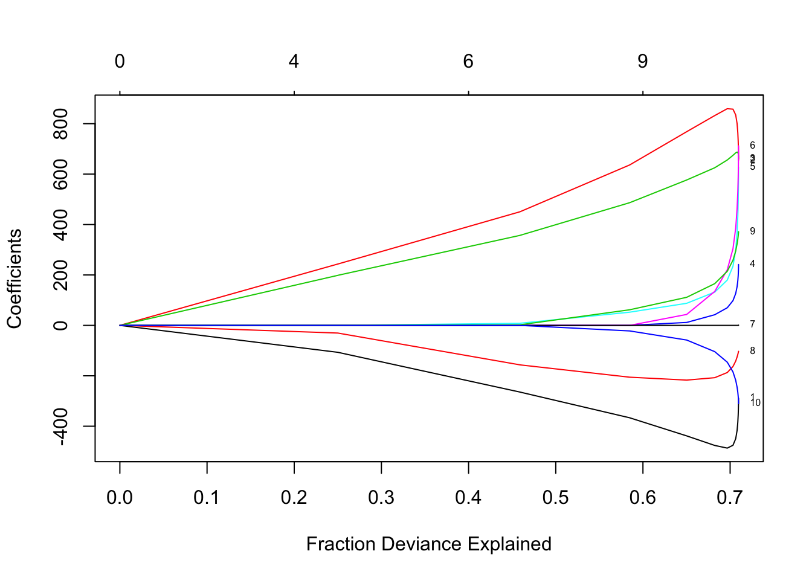
横坐标为解释方差的百分比时的路径图和之前的不太一样。非0参数个数越多，解释的方差百分比就越大。到最右端的时候，解释方差变化很小，但是参数估计确急剧增大。由图中我们可以看出，Q7对模型拟合几乎起不了作用。观察这些图能够帮助我们将注意力放在一些重要的变量上。
如果确定了调优参数\(\lambda\)的取值，我们便可以进一步得到相应的参数估计并预测新数据。在之前“初识glmnet”那一小节中，我们展示了在默认设置（alpha = 1，即只有lasso罚函数的情况下）下如何得到调优参数\(\lambda\)的某个取值下的拟合结果。这里和之前的情况稍有不同，因为我们设置alpha=0.2，也就是说现在lasso和岭回归的罚函数同时存在。我们可以在fit=glmnet(as.matrix(trainx),trainy,alpha=0.2,nlambda=20)结果的基础上得到相应\(\lambda\)取值的调优参数。从输出结果看，若考虑解释方差的变化情况，\(\lambda \in [829.7, 1347]\)之间比较妥当。这里我们选择\(\lambda ＝ 1000\)，这里为了展示一些函数的用法，特意选择了不在调优过的\(\lambda\)取值中的数，也可以通过下面这行简短的代码查看你想要的取值是不是已经调优拟合过：
any(fit$lambda == 1000)## [1] FALSE可以看到返回的是FALSE，即\(\lambda ＝ 1000\)这个取值不在调优取值内。于是有两种方法可以得到相应的参数估计。第一种是重新用\(\lambda ＝ 1000\)更新拟合模型，这时我们想要得到的是确切的拟合值，可以设置exact = T，再次强调注意在函数中\(\lambda\)对应的设置是s：
coef.exact = coef(fit, s = 1000, exact = T)你也可以不要再次拟合模型，那么我们可以设置exact = F（这是函数的默认设置），这样函数会用插值法得到相应的近似结果：
coef.apprx = coef(fit, s = 1000, exact = F)我们可以看看这两种情况下参数估计有何不同：
cbind2(coef.exact, coef.apprx)## 11 x 2 sparse Matrix of class "dgCMatrix"
## 1 1
## (Intercept) 1208.75790 1177.37262
## Q1 -485.44857 -483.29175
## Q2 852.41149 850.50376
## Q3 645.89607 645.89528
## Q4 59.16109 60.82823
## Q5 161.48707 163.98503
## Q6 188.02162 192.23258
## Q7 . .
## Q8 -196.29622 -193.76827
## Q9 196.35592 198.42621
## Q10 -129.38656 -132.20608输出的左边那列是确切拟合，右边的是插值近似，可以看到它们非常相近，所以通常情况下直接用线性插值就可以，不一定要重新拟合模型。同样我们可以在新的数据集上预测结果：
# 和之前一样，我们抽取一个小样本最为新自变量观测
newdat = matrix(sample(1:9, 30, replace = T), nrow = 3)
predict(fit, newdat, type = "response", s = 1000)## 1
## [1,] 6664.514
## [2,] 9799.426
## [3,] 2430.454这里的type选项设置有3种，上面的type = "response"也就是直接得到预测的应变量估计。如果type = "coefficients"，等价与之前的coef.apprx = coef(fit, s = 1000, exact = F)，得到的是线性插值参数估计：
predict(fit, newdat, type = "coefficients", s = 1000)## 11 x 1 sparse Matrix of class "dgCMatrix"
## 1
## (Intercept) 1177.37262
## Q1 -483.29175
## Q2 850.50376
## Q3 645.89528
## Q4 60.82823
## Q5 163.98503
## Q6 192.23258
## Q7 .
## Q8 -193.76827
## Q9 198.42621
## Q10 -132.20608type = "nonzero" 将会返回一个向量告诉你那些自变量的参数估计非0：
predict(fit, newdat, type = "nonzero", s = 1000)## X1
## 1 1
## 2 2
## 3 3
## 4 4
## 5 5
## 6 6
## 7 8
## 8 9
## 9 10此外，你也可以自定义k层交互校验的层数。glmnet()中的参数在cv.glmnet()中都有，后者还多了参数nfolds用来定义层级的数目，foldid让用户自定义层级，以及type.measure评估标准：方差（deviance）或者绝对误差均值（mae）。不同类型的的模型有不同的评估标准。比如type.measure="class"仅仅适用于二项回归和多项逻辑回归，其使用的是误判率。type.measure="auc"只针对二分类逻辑回归，使用的是ROC线下面积。刚才提到的绝对误差均值type.measure="mae"可以用与除了cox模型之外的其它所有模型。我们会在之后介绍其它模型。对于高斯族类的模型，默认设置是type.measure="deviance"。这里我们修改下设置，用绝对误差均值：
cvfit = cv.glmnet(as.matrix(trainx), trainy, type.measure = "mae", nfolds = 20)这里顺便提一下，cv.glmnet()函数能够支持并行计算，这用到doMC包。
# 抽取一个大样本来展示并行计算对效率的提高
X = matrix(rnorm(1e5*200), 1e5, 200)
Y = rnorm(1e5)
# 不用并行计算
system.time(cv.glmnet(X, Y)) user system elapsed
26.476 1.423 27.918 library(doMC)
# 我的电脑是4核的，所以设置cores = 4
registerDoMC(cores = 4)
# 用并行计算
system.time(cv.glmnet(X, Y, parallel = T)) user system elapsed
15.574 1.047 12.603 大家可以看到用并行计算在数据量大的时候能够节省好多时间。函数coef()和predict()用于cv.glmnet对象的方式和glmnet相似，只是前者多了两个关于\(\lambda\)参数值s的字符串设置：lambda.min（对应最小均方误差的\(\lambda\)值）和lambda.1se（对应最小均方误差1个标准差的\(\lambda\)值）：
# 这里不展示输出结果
cvfit = cv.glmnet(as.matrix(trainx), trainy, type.measure = "mse", nfolds = 20)
# 最小均方误差对应的参数值
cvfit$lambda.min
# 预测新样本
predict(cvfit, newx = newdat, s= "lambda.min")
# 得到参数估计
coef(cvfit, s = "lambda.min")如果你不仅想要选择\(\lambda\)，还要尝试不同的\(\alpha\)的参数值，可以自己指定交互校验的样本分层情况。
# 自定义层级
foldid = sample(1:10, size = length(trainy), replace = T)
# 尝试3个不同的alpha取值：1、0.5、0.2和0
cv1 = cv.glmnet(as.matrix(trainx), trainy, foldid = foldid, alpha = 1)
cv.2 = cv.glmnet(as.matrix(trainx), trainy, foldid = foldid, alpha = .2)
cv.5 = cv.glmnet(as.matrix(trainx), trainy, foldid = foldid, alpha = .5)
cv0 = cv.glmnet(as.matrix(trainx), trainy, foldid = foldid, alpha = 0)plot(log(cv1$lambda), cv1$cvm, pch = 19, col = 2, xlab = "log(Lambda)", ylab = cv1$name)
points(log(cv.5$lambda), cv.5$cvm, col = 1)
points(log(cv.2$lambda), cv.2$cvm, col = 3)
points(log(cv0$lambda), cv0$cvm, col = 4)
legend("topleft", legend = c("alpha = 1", "alpha = 0.5", "alpha = 0.2", "alpha = 0"),
pch = 19, col = c(2, 1, 3, 4))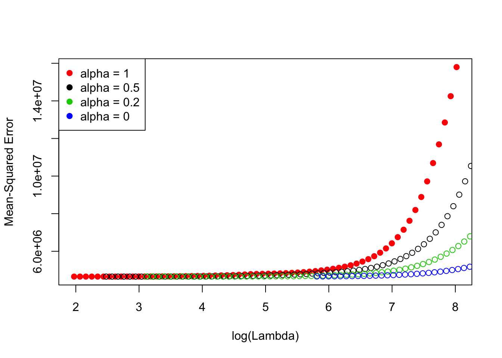
可以看到，不同 alpha的取值对应的最优均方误差几乎相同，只是在\(\lambda\)值大的时候（图的右端），\(\alpha\)值的变化会对模型拟合结果产生影响。
在实际应用中，基于问题的背景需要对参数进行一些限制。回顾下面三个问卷调查的问题（小伙伴们可以到“数据集模拟和背景介绍”那一章中查看所有问卷调查的问题）：
-（Q3）：品牌的知名度对我来说非常重要 -（Q8）：价格对我来说很重要
其中问题Q3和消费金额应该是正相关的，对品牌知名度在意的人，很可能是土豪或者国民老公一类的，反正相对不差钱，衣着对于这部分群体而言满足的需求已经从马斯洛的需求金字塔底端升级到顶端。而Q8的回复和消费金额应该是负相关的，对价格越是在意的人，花销很可能越小，屌丝群体，动不动就得卖肾，生活不易，且花且珍惜。好啦，人艰不拆，我们从残酷的现实世界回到美好的数据世界。在这里，我们需要限定参数估计的区间，Q3的参数估计是正数，Q8的参数估计是负数。在glmnet()函数中，我们可以对每个参数设置可能的限制区间，如果不知道区间的，可以用很小或者很大的上下限。这里需要赋予一个长度为10的向量，其中每个元素对应一个变量的上（或下）限值：
# 先得到一个下限向量，设置成负无穷大
# 这时等于没有下限
lower.limits <- rep(-Inf, ncol(trainx))
# 在将需要的下限值加入
# Q3的估计是正数，所以下限为0
lower.limits[3] <- 0
# 类似的设置上限向量
upper.limits <- rep(Inf, ncol(trainx))
upper.limits[8] <- 0
boundfit = glmnet(as.matrix(trainx), trainy, lower.limits = lower.limits, upper.limits = upper.limits)注意，这里下限lower.limits的值必须是负数或者0，上限upper.limits的值必须是正数或者0。
11.3 逻辑回归
逻辑回归是非常流行的判别方法，尤其对于二分类问题。我们以生猪疫情数据为例来讲解模型以及实践代码。关于数据的模拟和背景介绍，可以参考之前“数据集模拟和背景介绍”章节中相应小节。研究目标是对农场爆发疫情建模。假设样本量为\(n\)，对应\(G\)个自变量（也就是农场问卷调查的问题），每个问题对应3个选项（A、B和C），因此每个分类自变量将转化为3个虚拟变量，不知道大家是不是记得，我们在数据模拟的部分讲过选项C作为基准选项，因为某个回复一定是A、B和C中的一种，所以有一列包含重复信息，我们任意选择一个作为基准列从自变量矩阵中删去。假设第\(i\)个受访农场（\(i=1,\dots,n\)）对应第\(g\)个问题（\(g=1,\dots,G\)）回复编码后的虚拟变量观测是\(\mathbf{x_{ig}}\)（如果第1个农场在第2个问题中选择B，那么对应的观测就是\(\mathbf{x_{12}}=(0,1)^{T}\)），这种情况下第\(g\)个问题对应的自由度就是2，我们将自由度一般化的记为\(df_g\)。第\(i\)个农场对应疫情发生实际观测情况就是应变量\(y_i \in \{0,1\}\)，其中1代表发生疫情，0代表没有发生疫情。第\(i\)个农场疫情发生的概率是\(\theta_i\in [0,1]\)。
11.3.1 普通逻辑回归
基于上述数学符号定义，对于普通逻辑回归：
\[y_{i}\sim Bounoulli(\theta_{i})\]
\[log\left(\frac{\theta_{i}}{1-\theta_{i}}\right)=\eta_{\mathbf{\beta}}(x_{i})=\beta_{0}+\sum_{g=1}^{G}\mathbf{x_{i,g}}^{T}\mathbf{\mathbf{\beta_{g}}}\]
其中 \(\beta_{0}\) 是截距项，且\(\mathbf{\beta_{g}}\)是第\(g\)个问题观测转化成的虚拟变量对应的参数估计。在当前例子中，每个问题有3个选项，所以每个问题对应3-1=2个虚拟变量（其中选项C是基准项，之前已经讲过了），\(\mathbf{\beta_{g}}\)就是长度为2的向量。
一般逻辑回归就是通过最大化下面的极大似然函数的对数估计\(\mathbf{\beta}=(\beta_{0}^{T},\mathbf{\beta_{1}}^{T},\mathbf{\beta_{2}}^{T},...,\mathbf{\beta_{G}}^{T})^{T}\)：
\[ \begin{eqnarray*} l(\mathbf{\beta})&=&log[\prod_{i=1}^{n}\theta_{i}^{y_{i}}(1-\theta_{i})^{1-y_{i}}]\\ &=&\sum_{i=1}^{n}\{y_{i}log(\theta_{i})+(1-y_{i})log(1-\theta_{i})\}\\ &=&\sum_{i=1}^{n}\{\ y_{i}\eta_{\mathbf{\beta}}(\mathbf{x_{i}})-log[1+exp(\eta_{\mathbf{\beta}}(\mathbf{x_{i}}))]\ \}. \end{eqnarray*} \]
在逻辑回归中，当变量个数相对观测较大时，很容易发生完全分离或者准完全分离的现象，这时候没有唯一的极大似然估计，因此参数估计的方差极大。关于逻辑回归这样的对数线性模型参数极大似然估计的存在性，唯一性的讨论可以参考[67]和[68]。这种情况时常出现，比如疾病预测数据：
library(MASS)
dat <- read.csv("/Users/happyrabbit/Documents/GitHub/DataScientistR/Data/sim1_da1.csv")
fit <- glm(y~., dat, family = "binomial")glm.fit: algorithm did not convergeglm.fit: fitted probabilities numerically 0 or 1 occurred大家可以看到，函数报错说无法收敛，这里就是发生了完全分离的情况。这时收缩方法就可以解决这个问题。
11.3.2 收缩逻辑回归
我们可以类似的在逻辑回归的似然函数后添加罚函数来收缩参数估计：
\[ \underset{\mathbf{\beta}\in \mathbb{R}^{p+1}}{min} -\sum_{i=1}^{n}\{\ y_{i}\eta_{\mathbf{\beta}}(\mathbf{x_{i}})-log[1+exp(\eta_{\mathbf{\beta}}(\mathbf{x_{i}}))]\ \}+\lambda [(1-\alpha) \parallel \mathbf{\beta}\parallel _{2}^{2}/2] + \alpha \parallel \mathbf{\beta}\parallel _{1} ] \]
dat <- read.csv("/Users/happyrabbit/Documents/GitHub/DataScientistR/Data/sim1_da1.csv")
trainx = dplyr::select(dat, -y)
trainy = dat$y
fit <- glmnet(as.matrix(trainx), trainy, family = "binomial")可以看到，这里没有错误信息。和之前类似，我们可以绘制参数收缩的路径图，提取某个\(\lambda\)取值对应的参数估计，并且进行预测。比如我们可以绘制下面的解释方差比例的参数路径图，绘制图形的语法和之前高斯的情况一样：
plot(fit, xvar = "dev")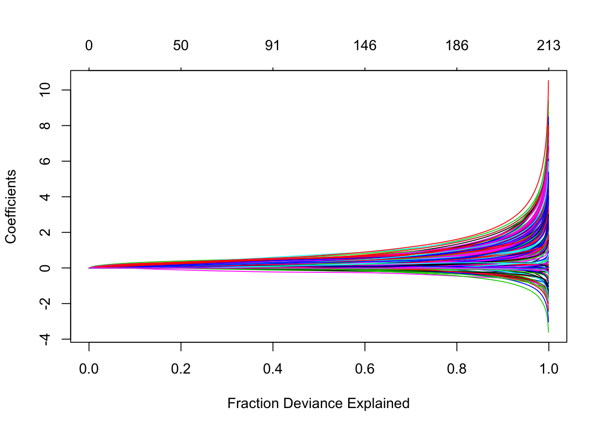
预测函数predict()和之前的高斯族情况有所不同，主要在于type选项。在二项应变量的情况下，函数的type选项有如下几种：
link：返回链结函数的拟合值response：返回拟合的概率值class：返回预测的类别（0/1）值coefficients：返回相应的参数估计nonzero：返回估计非0的参数指针向量（即告诉你模型选择了哪些参数）
函数默认的这些估计针对的是因子型应变量中第二个层级。比如这里的应变量trainy对应的因子层级是：
levels(as.factor(trainy))## [1] "0" "1"这里的预测概率针对的是第二个因子层级，也就是“1”的概率。这里用3个观测行和两个\(\lambda\)的取值为例，展示predict()函数的用法：
newdat = as.matrix(trainx[1:3, ])
predict(fit, newdat, type = "link", s = c(2.833e-02, 3.110e-02))## 1 2
## 1 0.1943472 0.1442796
## 2 -0.9913159 -1.0076600
## 3 -0.5840566 -0.5496074上面输出中第1列对应的是\(\lambda=0.02833\)时3个样本的链结函数预测值。第2列对应的是\(\lambda=0.0311\)时的链结函数预测值。类似的，大家可以自己改变type的设置看结果输出。对逻辑回归我们也可以类似的使用cv.glmnet()函数通过交互校验对参数进行调优。参数和高斯的情况基本相同，不同的地方在于type.measure参数的设置。因为这里应变量是分类变量而非连续变量，在之前的“模型评估度量”章节里详细的介绍过应变量为分类和连续时模型评估方法的差异。在分类情况下，模型评估方法的常用设置type.measure有：
class：计算误判率auc：仅对于二分类的情况，计算ROC曲线下面积
例如：
# 老用as.matrix(trainx)确实有些烦人，但是函数要求时矩阵格式。
# 小伙伴可以在一开始选择将trainx直接转化成矩阵格式。
# 这里不这么做的原因是矩阵格式下有的数据框的操作又无法进行
# 且一些数据框的行列信息可能在转化过程中丢失。
# 所以在每次拟合模型的时候临时转化而不更改原数据框
cvfit = cv.glmnet(as.matrix(trainx), trainy, family = "binomial", type.measure = "class")
plot(cvfit)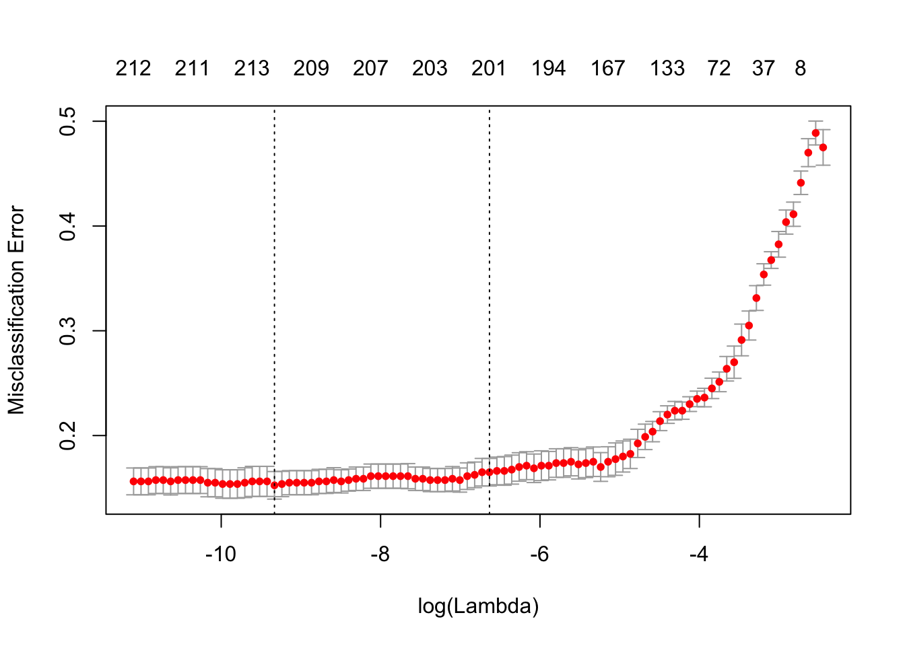
上面使用的是误判率作为标准，进行10层交互校验。同样你可以得到对应最小误判率的\(\lambda\)取值，以及距离最小误判率一个标准差的\(\lambda\)取值：
cvfit$lambda.min## [1] 8.856624e-05cvfit$lambda.1se## [1] 0.001315181至于获取参数估计以及对新样本进行预测之前已经讲过，在此就不赘述。
11.3.3 知识扩展：群组lasso逻辑回归
下面我进一步讲一个相对较新的方法：群组lasso逻辑回归。该方法最早由Meier等人在2008年提出的[69]。它在普通lasso逻辑回归的基础上加上了变量的分组信息。比如在疾病预测的例子中，每个问题的回复对应两个虚拟变量，来自同一个问卷调查问题的虚拟变量在反映的信息上有相似性，可以归为一组。这样分组在当前应用例子中是必须的。因为增加分组信息之后，模型不仅可以在组内选择变量，而且可以对不同的组进行选择，也就是说属于同一组的变量参数同时为0或者同时不为0。此例子中，不同组代表不同的问题。这里变量选择的目标主要是从问卷中选择重要的对疾病爆发有预测性的问题，而非问题中的具体选项，所以群组lasso逻辑回归对解决这样的问题非常有效。群组逻辑回归最小化下面方程：
\[ S_{\lambda}(\mathbf{\beta})=-l(\mathbf{\beta})+\lambda\sum_{g=1}^{G}s(df_{g})\parallel\mathbf{\beta_{g}}\parallel_{2} \] 其中\(\lambda\)是调优参数，\(s(\cdot)\)调整罚函数大小的系数，[69]最初提出\(s(df_g)=df_g^{0.5}\)，因为这样能够保证每个组参数估计对应的罚函数值和该组含有的变量数目同阶。\(l(\mathbf{\beta})\) 是普通逻辑回归的似然函数。这里需要对\(\lambda\)进行调优，范围在0到\(\lambda_{max}\)之间。这里的\(\lambda_{max}\)定义如下[69]：
\[ \lambda_{max}=\underset{g\in\{1,...,G\}}{max}\left\{\frac{1}{s(df_{g})}\parallel \mathbf{x}_{g}^{T}(\mathbf{y}-\bar{\mathbf{y}})\parallel_{2}\right\}, \]
当\(\lambda=\lambda_{max}\)时，模型中只有截距项存在，也就是说除了\(\beta_0\)以外所有其它变量参数估计都是0。当\(\lambda=0\)时，模型等价于普通逻辑回归。我们通常取如下m个\(\lambda\)值进行调优：
\[\{0.96\lambda_{max},0.96^{2}\lambda_{max},0.96^{3}\lambda_{max},...,0.96^{m}\lambda_{max}\}\]
这里的m表示你想要调优的参数个数，通常在100到150之间比较合适。参数的选择还是需要交互校验。有3种调优准则，其中之一是已经讲过的AUC，在此不赘述。除了AUC之外，还有两种准则：对数似然函数值[69]和最大相关系数。每个调优参数对应的对数似然函数值是其在不同交互校验拟合得到的对数似然函数的平均，这个很容易理解。最大相关系数来自Yeo和Burge的论文，其定义如下[70]：
\[ \rho_{max}=max\{\rho_{\tau}|\tau\in(0,1)\}, \]
其中\(\tau\in(0,1)\) 是划分预测概率的截断点，概率大于\(\tau\)的判定为1，否者为0。\(\rho_\tau\)是观测到的真实应变量和相应截断点\(\tau\)下得到的预测结果的Pearson相关系数。我正在开发的一个R包中有实现群组lasso逻辑回归调优拟合的函数。可以通过下面代码安装该包：
devtools::install_github("happyrabbit/DataScienceR")安装好了之后载入该包：
library(DataScienceR)##
## Attaching package: 'DataScienceR'## The following object is masked _by_ '.GlobalEnv':
##
## multiplot该包中含有这里使用的疾病预测数据，只需要用下面代码载入数据：
data("sim1_da1")包中的函数cv_glasso()可以用来对不同的参数进行调优：
# sim1_da1中最后一列y是应变量，其余的都是自变量
# trainx是自变量矩阵，去除应变量列
trainx = dplyr::select(sim1_da1, -y)
# 将应变量存在trainy中
trainy = sim1_da1$y
# 得到关于群组的指针
index <- gsub("\\..*", "", names(trainx))可以看到，每个问题对应的虚拟变量属于同一组：
index[1:50]## [1] "Q1" "Q1" "Q2" "Q2" "Q3" "Q3" "Q4" "Q4" "Q5" "Q5" "Q6"
## [12] "Q6" "Q7" "Q7" "Q8" "Q8" "Q9" "Q9" "Q10" "Q10" "Q11" "Q11"
## [23] "Q12" "Q12" "Q13" "Q13" "Q14" "Q14" "Q15" "Q15" "Q16" "Q16" "Q17"
## [34] "Q17" "Q18" "Q18" "Q19" "Q19" "Q20" "Q20" "Q21" "Q21" "Q22" "Q22"
## [45] "Q23" "Q23" "Q24" "Q24" "Q25" "Q25"下面我们设置调优参数，nlam是调优参数个数，也就是\(\{0.96\lambda_{max},0.96^{2}\lambda_{max},0.96^{3}\lambda_{max},...,0.96^{m}\lambda_{max}\}\)中的m。调优过程中会有很多输出，这里省略这些输出：
# 对100个调优参数值进行调优
nlam <- 100
# 设置调优过程中模型的预测类型
# - `link`：返回链结函数的拟合值
# - `response`：返回拟合的概率值
#
# 这和之前的
type = "link"
# number of cross-validation folds
kfold <- 10
cv_fit <- cv_glasso(trainx, trainy, nlam = nlam, kfold = kfold)
# 只展示部分结果
str(cv_fit)这里由于篇幅所限，只展示部分cv_fit的结果：
...
$ auc : num [1:100] 0.573 0.567 0.535 0.484 0.514 ...
$ log_likelihood : num [1:100] -554 -554 -553 -553 -552 ...
$ maxrho : num [1:100] -0.0519 0.00666 0.04631 0.0486 0.06269 ...
$ lambda.max.auc : Named num [1:2] 0.922 0.94
..- attr(*, "names")= chr [1:2] "lambda" "auc"
$ lambda.1se.auc : Named num [1:2] 16.74 0.81
..- attr(*, "names")= chr [1:2] "" "se.auc"
$ lambda.max.loglike: Named num [1:2] 1.77 -248.86
..- attr(*, "names")= chr [1:2] "lambda" "loglike"
$ lambda.1se.loglike: Named num [1:2] 9.45 -360.13
..- attr(*, "names")= chr [1:2] "lambda" "se.loglike"
$ lambda.max.maxco : Named num [1:2] 0.922 0.708
..- attr(*, "names")= chr [1:2] "lambda" "maxco"
$ lambda.1se.maxco : Named num [1:2] 14.216 0.504
..- attr(*, "names")= chr [1:2] "lambda" "se.maxco"结果中
$ auc对应100个调优参数值对应的AUC值$ log_likelihood是调优参数对应的对数似然函数值$ maxrho是调优参数对应的最大相关性$ lambda.max.auc对应两个值，最优化auc的\(\lambda\)取值以及该取值下的auc值$ lambda.1se.auc对应的两个值分别是离最大auc值1个标准差的值，和其对应的\(\lambda\)值$ lambda.max.loglike对应两个值，最优化对数似然函数的\(\lambda\)取值以及该取值下的对数似然函数值$ lambda.1se.loglike对应的两个值分别是离最大对数似然函数值1个标准差的值，和其对应的\(\lambda\)值$ lambda.max.maxco对应两个值，最优化最大相关性的\(\lambda\)取值以及该取值下的最大相关性$ lambda.1se.maxco对应的两个值分别是离最优最大相关性1个标准差的值，和其对应的\(\lambda\)值
一般情况下我们主要用auc值作为标准，但是可以比较不同标准对应的调优参数选择，如果一致，我们会对调优参数的选择更有信心。如果差别很大，那我们可能需要进一步考虑参数选择的过程是不是稳定。那么什么时候用最优化相应准则的调优参数，什么时候用1标准差调优参数呢？以auc为例，如果auc从最优值到1标准差值变化非常平缓，比如从0.8降低到0.78，但放松标准可以极大的改变选择的调优参数，如果我们牺牲一点auc，模型中的参数数量可能大量降低（这种情况我经常遇到），那模型的解释性大大提高，这时就可以适当放松标准。
也可以对交互校验拟合结果绘图：
plot(cv_fit)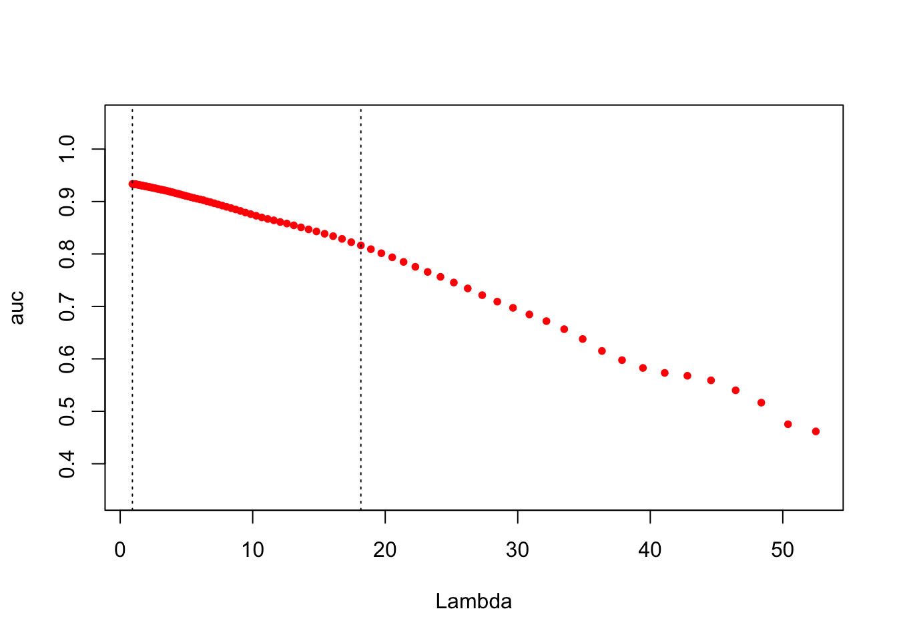
其中横坐标是调优参数值，纵坐标是auc。两条虚线分别对应的是最优化auc的\(\lambda\)取值和1标准差\(\lambda\)取值。一旦确定调优参数的值，可以用fitglasso()重新拟合相应模型，比如我们取最优化auc的调优参数值\(\lambda=0.922\)：
fitgl <- fitglasso(trainx, trainy, lambda = 0.922, na_action = na.pass)Lambda: 0.922 nr.var: 229 类似的可以使用coef()函数：
coef(fitgl) 0.922
Intercept -5.318039e+01
Q1.A 1.756672e+00
Q1.B 1.719050e+00
Q2.A 2.169919e+00
Q2.B 6.939251e-01
Q3.A 2.102014e+00
Q3.B 1.358941e+00
Q4.A 1.561528e+00
Q4.B 5.539396e-01
...对新样本预测有一些不同，得用predict_glasso()函数：
prey <- predict_glasso(fitgl, trainx)11.4 收缩多项回归
对类数目超过2的情况需要使用多项回归，比如服装消费者分为：价格敏感（Price），炫耀性消费（Conspicuous），质量（Quality），风格（Style）这四类。这里一般性的假设应变量有K个类别，\(\mathbb{G}=\{1,2,\dots,K\}\)。这里的目标是找到样本属于每个类别的概率：
\[Pr(G=k|\mathbf{X=x})=\frac{e^{\beta_{0k}+\mathbf{\beta_{k}^{T}\mathbf{x}}}}{\Sigma_{l=1}^{K}e^{\beta_{0l}+\mathbf{\beta_{l}^{T}x}}}\]
这里的应变量可以转化成虚拟变量的矩阵，每一列代表一个类别。假设\(\mathbf{Y}\)是应变量转化成的\(N\times K\)的0/1矩阵，其中\(y_{il}=I(g_{i}=l)\)，也就是某个观测\(i\)从属的类别\(l\)的位置上观测是1，其余是0。此时弹性网络模型优化的是如下方程：
\[l({\beta_{0k}, \mathbf{\beta_{k}}_{1}^{K}})= - \left[ \frac{1}{N}\Sigma_{i=1}^N \left( \Sigma_{k=1}^K y_{il}(\beta_{0k} + \mathbf{x_i^T\beta_{k}}) - log(\Sigma_{k=1}^{K}e^{\beta_{0k}+\mathbf{x_i^T\beta_{k}}}) \right) \right]+\lambda\left[ \frac{(1-\alpha)\parallel \beta \parallel_F^2}{2} + \alpha \Sigma_{j=1}^p \parallel \beta_j \parallel_q\right]\]
这个式子有些复杂，稍微解释一下。其实思路和之前是一样的，上式的前半部分是应变量矩阵中对应\(l\)类那列的对数似然函数取负号，第二部分是罚函数。第一部分\(y_{il}(\beta_{0k} + \mathbf{x_i^T\beta_{k}})\)中，\(y_{il}\)和\(\mathbf{x_i^T\beta_{k}}\)是取乘积因为\(y_{il}\)的取值是0/1，否则应该是\(log(y_{il})+\beta_{0k} + \mathbf{x_i^T\beta_{k}}\)的形式。此外，罚函数中\(\parallel\beta\parallel_{F}^{2}\)的\(\beta\)是一个矩阵而非向量，因为这里每个类别都对应一个参数向量，所以所有类别的参数向量集结成了一个矩阵\(\beta\)。罚函数中的另外一项\(\parallel \beta_j \parallel_q\)中的q可以有两个取值：\(q\in \{1, 2\}\)。当\(q=1\)时，是对每个类对应的参数应用lasso罚，当\(q=2\)时，相当于是群组lasso罚，和之前“知识扩展：群组lasso逻辑回归”这个小节的方法非常类似，这时观测j对应的所有K个群组的参数同时为0或者同时不为0。
这里严格使用标准的牛顿迭代算法优化起来非常繁琐。glmnet包使用了一种叫做偏牛顿优化算法（Partial Newton Algorithm）的方法。该方法对对数似然函数进行偏二项逼近，即对某一类别每次只允许对应的参数\((\beta_{0k}, \mathbf{\beta_{k}})\)变化，其余参数保持不变。关于该算法更加详细的介绍，可以参考Noah Simon, Jerome Friedman和Trevor Hastie的论文[71]。
下面还是用服装消费者数据展示如何通过glmnet包实现该方法，这里自变量依旧和之前一样是问卷调查的问题，应变量变成是消费者类别：
library(glmnet)
dat <- read.csv("/Users/happyrabbit/Documents/GitHub/DataScientistR/Data/SegData.csv")
# 将10个问卷调查变量当作自变量
trainx <- dat[, grep("Q", names(dat))]
# 将消费者类别当作应变量
trainy <- dat$segment对于多项回归中有一个关于罚函数的选项type.multinomial，这是用来指定在上面提到过的\(\parallel \beta_j \parallel_q\)部分。如果type.multinomial = "group"对应的就是\(q=2\)的情况，也就是群组lasso。默认设置是非群组，也就是\(q=1\)。
fit <- glmnet(as.matrix(trainx), trainy, family = "multinomial")可以对拟合对象进行绘图：
plot(fit, xvar = "lambda", label = T, type.coef = "2norm")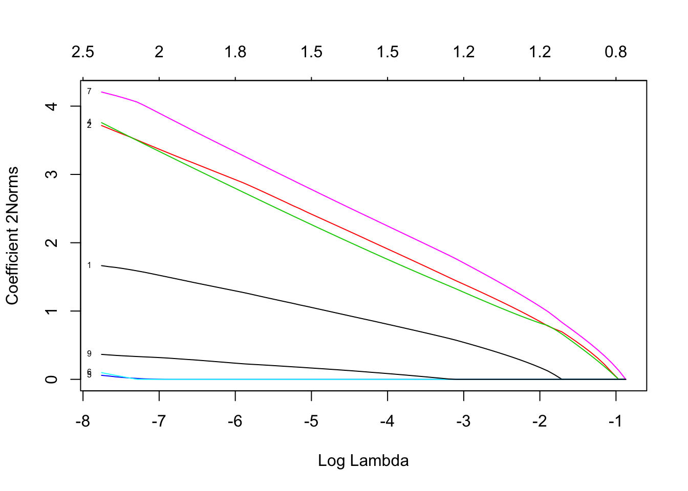
其中参数有：
xvar和label和之前相同，用来指定横坐标的变量和是否标出自变量名字type.coef和之前不同，如果type.coef = "coef"，那么对因变量的每个类别都会返回一幅图，此例子中会返回4幅图，各自对应一个类别的参数估计。如果type.coef = "2norm"，那么只会返回1幅图，纵坐标是所有类别参数的二阶矩
也可以用cv.glment()函数进行交互校验：
cvfit <- cv.glmnet(as.matrix(trainx), trainy, family = "multinomial")
plot(cvfit)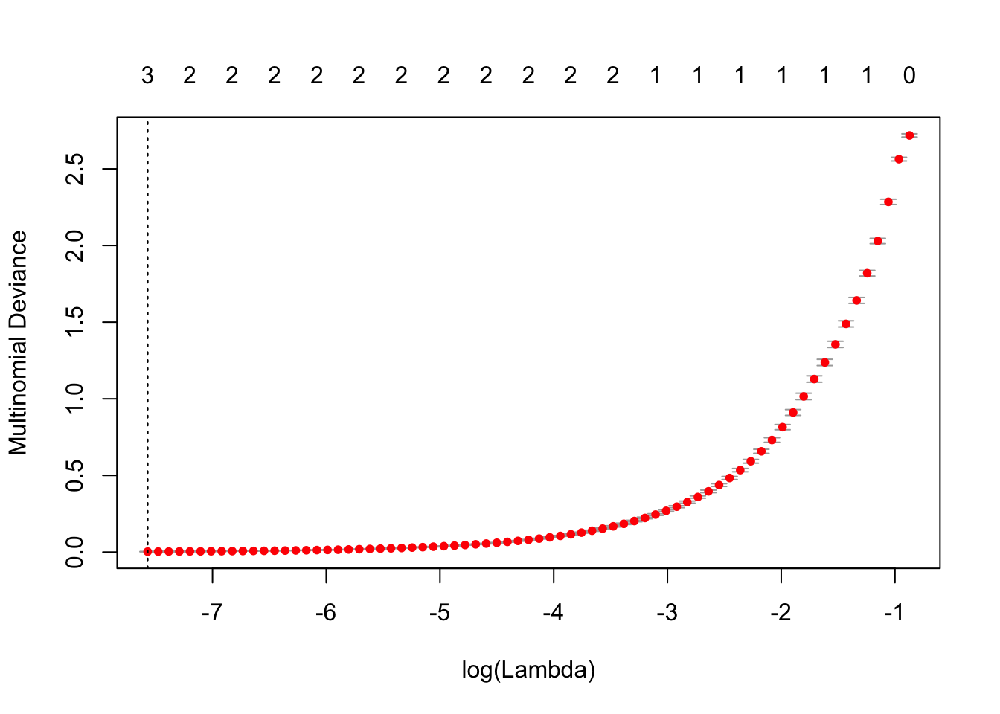
同样你可以得到最优的lambda取值然后用该取值拟合模型：
cvfit$lambda.min## [1] 0.0005155172newdat = matrix(sample(1:9, 60, replace = T), nrow = 6)
predict(cvfit, newdat, s = "lambda.min", type = "class")## 1
## [1,] "Conspicuous"
## [2,] "Conspicuous"
## [3,] "Quality"
## [4,] "Quality"
## [5,] "Style"
## [6,] "Style"11.5 泊松收缩回归
关于广义收缩方法中我们要介绍的最后一个是泊松模型。泊松回归处理的是应变量为计数的情况，比如消费者光顾实体店的次数。或者其它应变量非负，并且均值和方差成比例的情况。这里对应变量的要求是大致服从泊松分布的假设。泊松分布也是指数分布家族中的一员。通常对应变量进行对数变换：
\[log (\mu_{x})=\beta_{0}+\mathbf{\beta^{T}x}\]
这时的对数似然函数是：
\[l(\mathbf{\beta|X,y})=\Sigma_{i=1}^{N}\left(y_i(\beta_0+\mathbf{\beta^Tx_i})-e^{\beta_0+\mathbf{\beta^Tx_i}} \right)\]
和之前类似，我们需要优化的加上罚函数后的式子：
\[\underset{\beta_{0},\mathbf{\beta}}{min}\left\{ -\frac{1}{N}l(\mathbf{\beta|X,y})+\lambda\left((1-\alpha)\Sigma_{i=1}^{N}\frac{\mathbf{\beta_{i}^{2}}}{2}+\alpha\parallel\mathbf{\beta}\parallel_{1}\right)\right\} \]
下面继续用服装消费者数据展示如何通过glmnet包实现该方法，这里自变量依旧和之前一样是问卷调查的问题，应变量变成是实体店消费次数：
library(glmnet)
dat <- read.csv("/Users/happyrabbit/Documents/GitHub/DataScientistR/Data/SegData.csv")
# 将10个问卷调查变量当作自变量
trainx <- dat[, grep("Q", names(dat))]
# 实体店消费次数当作应变量
trainy <- dat$store_trans
# 拟合泊松模型
fit <- glmnet(as.matrix(trainx), trainy, family = "poisson")可以类似的使用plot()函数检查参数收缩的轨迹：
plot(fit, label = T)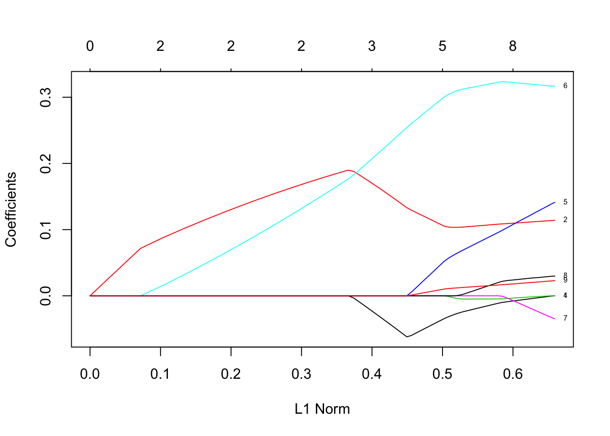
可以看到（Q2）：我喜欢买同一个品牌的服装和（Q6）：我喜欢在实体店购买的参数估计到很后面才收缩为0，之间表明是否喜欢实体店购买和真实实体店消费次数之间有关是很符合逻辑的，有意思的是，是否喜欢买同一个品牌的服装也和实体店消费次数有关。如果知道具体问题和实体店购买次数之间关系的正负性需要得到相应的回归系数。我们可以类似用cv.glment()函数进行交互校验：
cvfit <- cv.glmnet(as.matrix(trainx), trainy, family = "poisson")
plot(cvfit)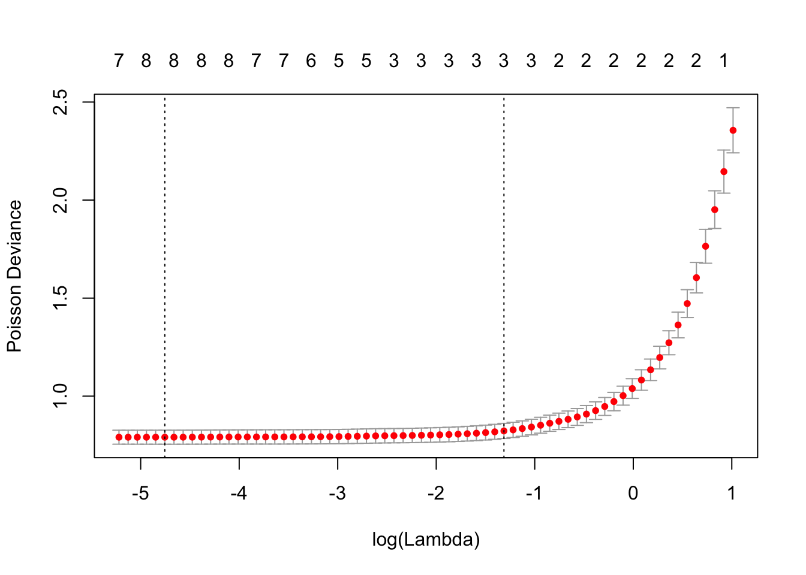
这里用来调优的准则是泊松离差。同样你可以得到最优的lambda取值然后用该取值拟合模型：
coef(fit, s=cvfit$lambda.min)## 11 x 1 sparse Matrix of class "dgCMatrix"
## 1
## (Intercept) 0.134542659
## Q1 -0.002966470
## Q2 0.112332909
## Q3 .
## Q4 -0.001188666
## Q5 0.128028742
## Q6 0.318738648
## Q7 -0.023964782
## Q8 0.027572033
## Q9 0.020892375
## Q10 .可见，那些喜欢买同一个服装品牌的，明确表明喜欢实体店购买以及有明确风格偏好的人会更多的光顾实体店。
11.6 本章总结
这里我们系统性的介绍了常用的广义回归收缩模型，以及如何用R实施这些模型。glmnet包能够通过罚极大似然函数拟合广义线性回归，也就是在似然函数上加上罚函数，和之间在RSS上加罚函数类似。之前的线性回归的情况是广义线性回归的一个特例。和之前一样，罚函数的选择可以是一阶范数和二阶范数的一个组合。glmnet包可以对一系列调优参数值同时计算参数估计。
我们介绍了线性回归，逻辑回归、多项式回归和泊松回归的收缩方法。此外对于逻辑回归，我们补充介绍了群组逻辑回归，该方法在自变量有明显群组效应的时候非常有效。
References
67. Wedderburn, R.W.M.: On the existence and uniqueness of the maximum likelihood estimates for certain generalized linear models. Biometrika. 63, 27–32 (1976).
68. A, A., J, A.A.: On the existence of the maximum likelihood estimates in logistic regression models. Biometrika. 71, 1–10 (1984).
69. L. Meier, S. van de Geer, Buhlmann, P.: The group lasso for logistic regression. J. R. Stat. Soc. Ser. B Stat. Methodol. 70, 53–71 (2008).
70. Yeo, G., Burge, C.: Maximum entropy modeling of short sequence motifs with applications to rna splicing signals. Journal of Computational Biology. 475–494 (2004).
71. Noah Simon, J.F., Hastie, T.: A blockwise descent algorithm for group-penalized multiresponse and multinomial regression. arXiv:1311.6529.